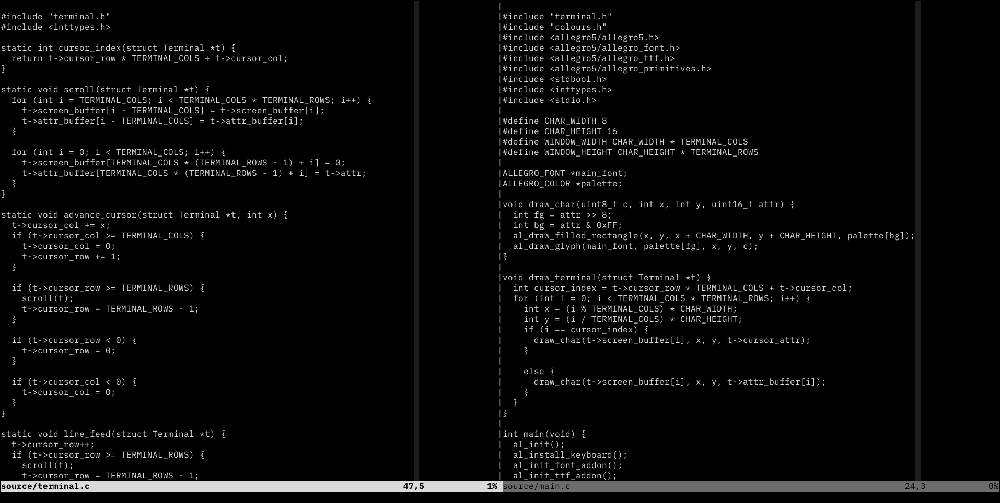

Line Numbers Considered Harmful

The above image is what my text editor of choice (Vim) looks like these days. Most Vim enthusiasts have all kinds of flash features enabled: colourful syntax highlighting, status bars, tree browsers, language servers providing error checking and style suggestions… I’ve turned all this off. I no longer even have visible line numbers.As I’ve experimented with more and more minimal approaches to writing code I’ve come to believe that none of those features are necessary or even useful. They disrupt flow and offer little in return.
White text on black, 80 columns. No line numbers, no colours, no menus, no mouse. Nothing between you and the code, and no interruptions. This is how you achieve flow.
There are a million and one tools out there that promise increased productivity. Productivity is not flow. Productivity is procrastination through busywork that feels productive. You don’t need a note-taking system, you don’t need a code snippet library; you need flow. To achieve flow you must eliminate as many barriers between yourself and the code as possible.
Language servers and other error-checking tools disrupt flow. If you’ve made a mistake, the compiler will tell you when it’s time. You don’t need to know about the mistake the moment you type it. By the time you’ve typed the mistake you’re already thinking about the code that must follow. Being interrupted and sent backward prevents you from thinking sequentially.
The mouse disrupts flow. Code must be typed and you don’t type with the rodent. Reject the rodent; keep your hands on the keyboard.
Syntax highlighting disrupts flow. The code says what it is already. Being written in orange or purple or green gives you no further information. Read the code, not the colours. Remove the barrier between yourself and the code.
Line numbers disrupt flow. If the compiler alerts you to an error on line 387, jump to line 387. The editor knows where that is. You don’t need to see it. You don’t need numbers in the margin to tell you 388 comes afterward. Reduce the number of things on the screen that are not code.
This is doing things “the hard way.” The hard way is the easy way. The hard way requires concentration; concentration induces flow.
Finally: don’t touch Emacs. A text editor does not need an organiser, or a mail client, or a debugger, or an IRC client, or a calendar, or an espresso machine. It definitely does not need an organiser and a mail client and a debugger and an IRC client and a calendar and an espresso machine.